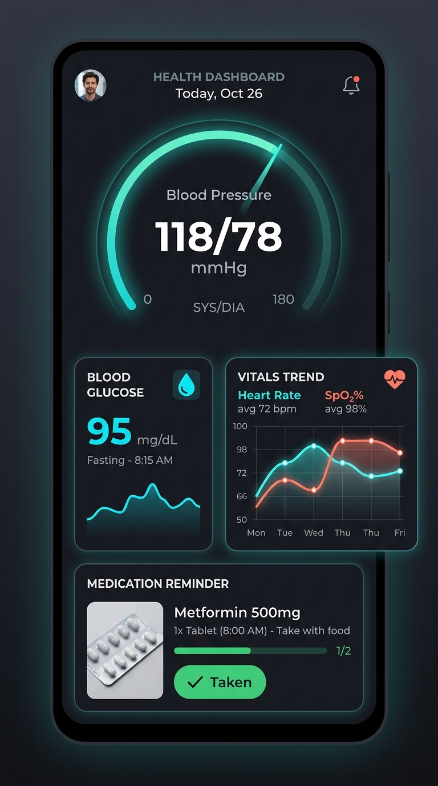

Precision Vitals Tracking.
100% Honest Medical Log.
The honest cardiovascular and glycemic companion. Track blood pressure, blood glucose, and prescription medications with bottom-to-top tachometer speedometers, exact adherence alarms, and doctor-certified PDF reports.

AHA & ADA Calibrated
100% Medical Grade Math
100% Honest Medical Logging NO FAKE SCANS
Play Store apps claiming to measure blood pressure or glucose using your smartphone camera flashlight are medically deceptive and prohibited by clinical boards. Phones lack optical transillumination hardware to measure vascular pressure. VitalPulse adheres strictly to clinical protocols: measure using your certified arm cuff or glucometer, and log here for comprehensive doctor analysis.
Test the Clinical Speedometer
Experience our dynamic radial gauge engine. Drag the clinical sliders below to see real-time AHA 2017 & ADA risk tiering, MAP, and pulse pressure calculations.
Built for Clinical Reliability
Engineered with modern Android Jetpack Compose, Room SQLite, and exact AlarmManager scheduling to give patients and doctors pure, verifiable health intelligence.
Radial Tachometer Speedometers
Instantly visualize systolic, diastolic, MAP, and pulse pressure on high-precision circular gauges sweeping upwards from bottom to top with real-time risk classification.
AHA 2017 & ADA StandardsExact Medication Reminder Alarms
Schedule prescription doses with Android 13+ exact alarms (`SCHEDULE_EXACT_ALARM`). Ring on time even in battery saver mode, complete with 1-tap "Mark as Taken" action.
Adherence Streak TrackingSmooth Bezier Trend Curves
Interactive sparklines and bezier charts across 7, 30, and 90-day timeframes with lifestyle correlation tags (caffeine, salt, exercise, stress, meal context).
Morning/Evening Surge AnalysisDoctor-Ready Clinical PDF Export
Generate structured, formatted medical PDF reports directly on your phone with clinical averages, distribution breakdowns, and estimated HbA1c for clinical visits.
Encrypted Device Storage100% Offline SQLite Privacy
Zero external databases. Your private medical measurements stay encrypted on your Android phone using Room SQLite. No account creation required.
Zero Cloud TrackingBiometric PIN Medical Lock
Guard sensitive health logs from prying eyes with an optional 4-digit security PIN screen and tactile haptic feedback.
Personal Data VaultWhy VitalPulse Stands Apart
Compare our honest, clinically certified utility against typical Play Store ad-traps.
| Clinical Standard | VitalPulse (This App) | Camera Scan Apps | Generic Loggers |
|---|---|---|---|
| Measurement Honesty | ✓ 100% Honest (Certified Cuffs & Glucometers) | ✗ Fake camera/flashlight scans | ✓ Manual logging only |
| AHA 2017 & ADA Risk Math | ✓ Exact clinical thresholds (MAP, PP, HbA1c) | ✗ Random randomized numbers | △ Outdated WHO 1999 rules |
| Offline Privacy | ✓ 100% Local SQLite on device | ✗ Mandatory cloud account & tracking | △ Sells telemetry data |
| Exact Medicine Alarms | ✓ `AlarmManager` wake alarms + streak tracking | ✗ No pill reminder alarms | △ Basic delayed notifications |
| Doctor PDF Export | ✓ Structured clinical summary with stats | ✗ Watermarked paywalled PDF | △ Raw CSV export only |
| Ad-Free Experience | ✓ Zero interstitial video popups | ✗ Invasive full-screen ad popups | ✗ Heavy banner advertisements |